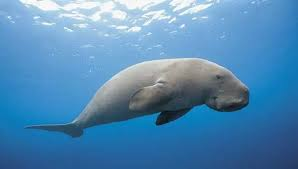
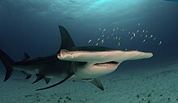
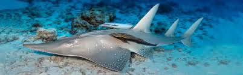
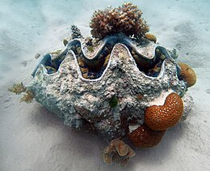
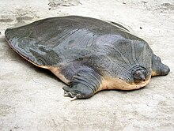

| S.No |
Picture |
Name |
Scientific Specifications |
Features |
Reason |
| 1 |
 |
Eelgrass limpet |
Domain: Eukaryota
Kingdom: Animalia
Phylum: Mollusca
Class: Gastropoda
Subclass: Patellogastropoda
Family: Lottiidae
Genus: Lottia
Species: †L. alveus |
Eelgrass limpet was a species of sea snail.
Until the late 1920s, this species was apparently quite common, and was easy to find at low tide in eelgrass beds, in many sheltered localities on the northeastern seaboard of North America.
This small limpet used to live on the blades of Zostera marina, a species of seagrass.
Limpets are voracious consumers of algae, and their action prevents algae from building up and using all the available space – a valuable resource on rocky shores. |
The eelgrass which is the habitat of eelgrass limpets were effected by "wasting disease" which caused them to extinct. |
| 2 |
 |
Dugong |
Domain: Eukaryota
Kingdom: Animalia
Phylum: Chordata
Class: Mammalia
Order: Sirenia
Family: Dugongidae
Subfamily: Dugonginae
Genus: Dugong
Species: D. dugon |
Dugong is type of sea cow which helps in maintaining seagrass meadows, sequester carbon, protect coastlines from tides, become prey for predators like sharks and killer whales, spred sea grass seeds etc.Dugongs liv.e in warm, shallow coastal waters in the Indian and Pacific Oceans, where they can find seagrass |
The dugong has been hunted for thousands of years for its meat and oil. Traditional hunting still has great cultural significance in several countries in its modern range, particularly northern Australia and the Pacific Islands. The dugong's current distribution is fragmented.The IUCN lists the dugong as a species vulnerable to extinction. |
| 3 |
 |
Ganges river Dolphin |
Domain: Eukaryota
Kingdom: Animalia
Phylum: Chordata
Class: Mammalia
Order: Artiodactyla
Infraorder: Cetacea
Family: Platanistidae
Genus: Platanista
Species: P. gangetica |
The Ganges river dolphin is important because it is a reliable indicator of the health of the entire river ecosystem. The government of India declared it the National Aquatic Animal in 2009. |
Ganges river Dolphins are endangered due to several reasons like fishing, pollution from industries, construction of dams and barrages which destroy its habitat, climate change, motorized vehicles, sediment deposition, mechanized boat traffic etc. |
| 4 |
 |
Golden Toad |
Domain: Eukaryota
Kingdom: Animalia
Phylum: Chordata
Class: Amphibia
Order: Anura
Family: Bufonidae
Genus: Incilius
Species: †I. periglenes |
As both a predator and prey, golden toads were an integral part of the food web of the ecosystem they inhabited. With the species now extinct, it will naturally affect the rest of the food web, depriving their predators of a specific food source and risking an overpopulation of local insect prey. |
The golden toad was last seen in 1989, and its disappearance was the first extinction to be blamed on human-caused global warming. |
| 5 |
 |
Pink-headed duck |
Domain: Eukaryota
Kingdom: Animalia
Phylum: Chordata
Class: Aves
Order: Anseriformes
Family: Anatidae
Genus: Rhodonessa
Species:R. caryophyllacea |
These species help in fresh water ecosystem contribution, seed dispersal, nutrient cycling and indicator species. |
Pink-headed duck were extincted because of habitat loss and hunting. IUNC declared these species as Critically Endangered. |
| 6 |
 |
Hammerhead shark |
Domain: Eukaryota
Kingdom: Animalia
Phylum: Chordata
Class: Chondrichthyes
Subclass: Elasmobranchii
Order: Carcharhiniformes
Family: Sphyrnidae
Genus: Sphyrna
Species: S. mokarran |
Hammerhead sharks play a vital role in marine ecosystem by acting as a top predator eating sick and injured creatures, stabilizing fish stock and ensuring diversity.
| Hammerhead sharks are getting exticted due to hunting, overfishing, beack protection programs etc. IUNC declared these species as Critically Endangered. |
|
| 7 |
 |
Sawfish |
Domain: Eukaryota
Kingdom: Animalia
Phylum: Chordata
Class: Chondrichthyes
Subclass: Elasmobranchii
Order: Rhinopristiformes
Family: Pristidae |
Sawfishes act as top carnivore which maintain balance in ecosystem, help in nutrient cycling, habitat enhancement, indicate the health of the ocean by culling out sick or injured prey. They are considered as symbols of strength, spirituality, and admiration. |
Sawfishes are near to extinction due to illegal hunting, fishing nets(as these species easily get caught in nets) and habitat destruction(mangrove forests).IUNC declared these species are Threatened Species. |
| 8 |
 |
Guitarfish |
Domain: Eukaryota
Kingdom: Animalia
Phylum: Chordata
Class: Chondrichthyes
Subclass: Elasmobranchii
Order: Rhinopristiformes
Family: Rhinobatidae |
Guitarfish play a vital role in the marine ecosystem as predators and prey, helping to maintain balance within their habitats. |
Some species of guitarfish are threatened or endangered due to commercial and subsistence fishing.Their low reproductive rates, low growth, late maturity are other reasons. The IUCN lists 23 species of guitarfish as Endangered and 10 as Critically Endangered. |
| 9 |
 |
Giant clams |
Domain: Eukaryota
Kingdom: Animalia
Phylum: Mollusca
Class: Bivalvia
Order: Cardiida
Family: Cardiidae
Genus: Tridacna
Species: T. gigas |
Giant clams act as food source, shelters, modify habitats, help in filtering water, Zooxanthellae reservoirs, produce calcium carbonate which help in reef frameworks. |
Giant clams are facing important threats from coral reef degradation and destruction, harvesting by coastal and island communities, and the sale and export of wild and dead specimens for the illegal aquarium trade and ornamental shell trade.IUNC declared these species in vulnerable category. |
| 10 |
 |
Indian narrow-headed softshell turtle |
Domain: Eukaryota
Kingdom: Animalia
Phylum: Chordata
Class: Reptilia
Order: Testudines
Suborder: Cryptodira
Family: Trionychidae
Genus: Chitra
Species: C. indica |
Spiny softshell turtles are important to the ecosystem because of their role as predators. Because they prey on crustaceans and aquatic insects as well as fish, they help keep these population under control in their habitat, according to Animal Diversity Web. |
Indian narrow-headed softshell turtle are extincted due to damming of rivers, destruction of wetlands, overfishing, pollution, and hunting, both for its meat and eggs.IUNC declared these species in Endangered category. |